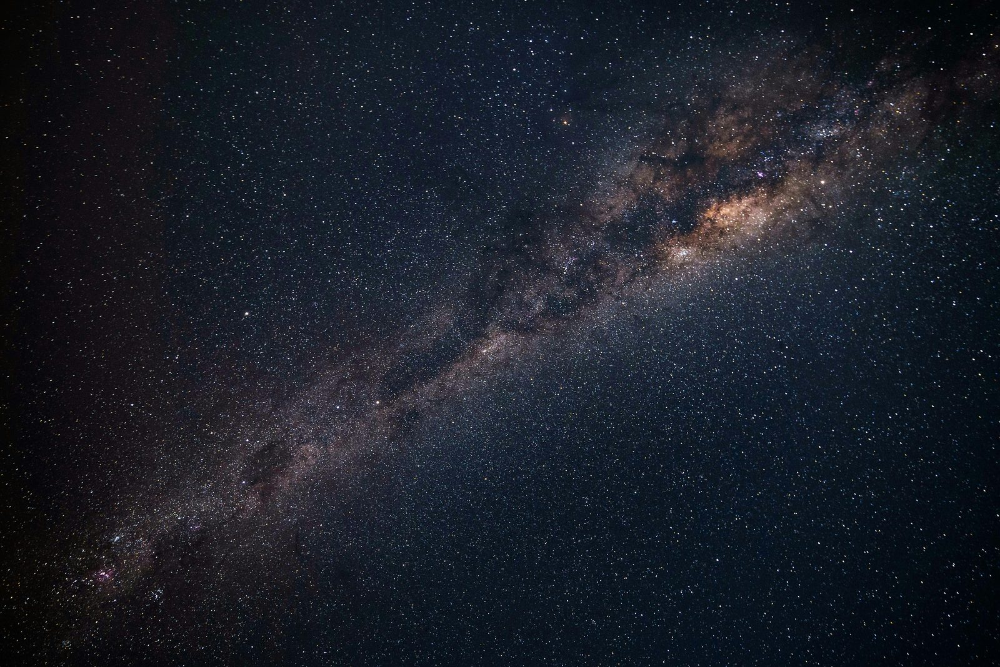

L'Italia ha avuto un ruolo fondamentale nell'esplorazione spaziale con scienziati pionieristici e missioni innovative.
L'Italia ha una lunga e affascinante storia nell'esplorazione spaziale, piena di scoperte e innovazioni. Molto prima delle recenti missioni di Samantha Cristoforetti alla Stazione Spaziale Internazionale, il nostro paese era già in prima fila nell'avventura dello spazio extra-atmosferico.

Tutto iniziò nei primi anni del XX secolo, quando il mondo cominciava a sognare il volo spaziale. Giulio Costanzi, un ingegnere dell'Aeronautica, fu uno dei pionieri italiani. Nel 1914, scrisse un articolo visionario sui viaggi spaziali, prevedendo molte delle sfide future degli astronauti, come la propulsione atomica e l'assenza di peso. Poco dopo, Luigi Gussalli, con una formazione in vari ambiti della meccanica, pubblicò libri innovativi sui propulsori a reazione e l'uso dell'energia solare per i viaggi interplanetari.
Il riconoscimento internazionale per l'Italia arrivò con la famiglia Crocco. Gaetano Crocco, fisico e visionario, fu tra i primi a proporre un razzo a stadi paralleli e sviluppò la "fionda gravitazionale", un metodo per accelerare le sonde spaziali utilizzando la gravità dei pianeti. Suo figlio, Luigi Crocco, si specializzò nella propulsione a razzo, contribuendo ulteriormente all'astronautica.
Ma la vera svolta per l'Italia arrivò con Luigi Broglio, considerato il padre dell'astronautica italiana. Grazie al suo eccezionale lavoro, l'Italia collaborò con gli Stati Uniti nel Progetto San Marco. Nel 1964, dalla base di Wallop Island in Virginia, fu lanciato il satellite San Marco 1, rendendo l'Italia la terza nazione al mondo a lanciare un satellite con un team nazionale. Questo satellite scientifico fornì preziosi dati sulla densità atmosferica e sulla ionosfera terrestre. In riconoscimento del suo lavoro, il Centro spaziale "Luigi Broglio" in Kenya, utilizzato per vari lanci e tracciamenti, porta il suo nome.
Oggi, l'Italia continua a brillare nel campo delle ricerche spaziali. È membro fondatore dell'ESA e collabora con le principali agenzie spaziali del mondo, tra cui NASA, CSA, JAXA e Roscosmos. Ha costruito una parte significativa della Stazione Spaziale Internazionale e ha avuto sette astronauti italiani partecipare a missioni spaziali. Samantha Cristoforetti, una delle più recenti, ha completato la sua ultima missione nel 2022, e altri due, Anthea Comellini e Andrea Patassa, sono in addestramento.
L'Italia ha una lunga e orgogliosa tradizione nella ricerca spaziale, dai primi esperimenti con i razzi al lancio dei primi satelliti. La sua industria aerospaziale ha svolto un ruolo significativo nello sviluppo di tecnologie avanzate e nella collaborazione internazionale per le missioni spaziali.
Nonostante le sfide e le difficoltà, l'Italia si è affermata come un attore rilevante nel contesto spaziale mondiale, ispirando generazioni future di appassionati di scienza e avventurieri dell'universo.
fonte: L’Italia nello spazio: una storia più lunga di quanto si immagini. Dalle origini ad oggi.
Parole Chiave
| Spazio | Dove sono le stelle, la luna e i pianeti. |
| Esplorazione | Andare a vedere nuovi posti. |
| Missione | Un lavoro speciale da fare, come andare nello spazio. |
| Satellite | Una macchina che gira intorno alla Terra nello spazio. |
| Razzo | Una macchina che vola molto veloce nello spazio. |
| Pianeta | Una grande palla come la Terra, Marte o Giove. |
| Energia | La forza che fa muovere le cose. |
| Propulsione | Come si fa a spingere qualcosa avanti, come un razzo. |
| Astronauta | Una persona che va nello spazio. |
| Lancio | Quando un razzo parte e va nello spazio. |
| Gravità | La forza che fa cadere le cose a terra. |
| Base | Un posto dove le persone lavorano o fanno partire i razzi. |
| Ricerca | Studiare qualcosa per capire meglio. |
| Collaborazione | Lavorare insieme con altre persone. |
| Agenzia | Un'organizzazione che fa un lavoro speciale, come andare nello spazio. |
Esercizio
Domande
- Chi ha scritto un articolo sui viaggi spaziali nel 1914?
- Cosa ha proposto Gaetano Crocco per le sonde spaziali?
- Quando è stato lanciato il satellite San Marco 1?
- Con quali agenzie spaziali lavora l'Italia oggi?
- Quanti astronauti italiani sono andati nello spazio e chi è andato nel 2022?